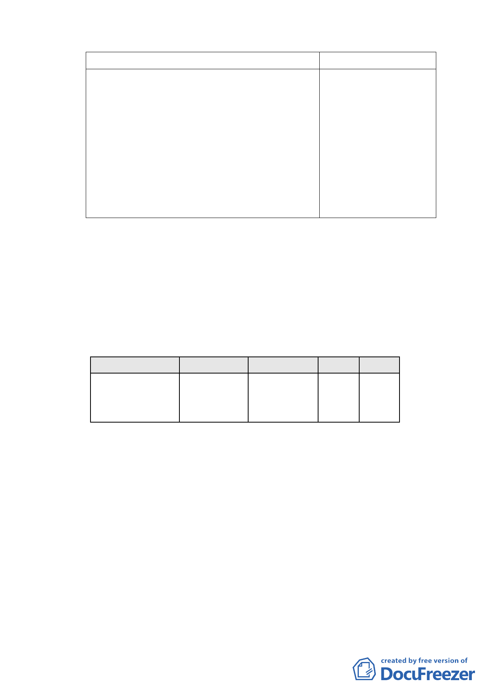

原計畫
新計畫
1. 本計畫區「辦公服務區（二）」適用綜合設 本計畫得適用「徵
計放寬容積獎勵且應就容積獎勵部分辦理 求參與『促進都市再
回饋，回饋數量以增加之容積之半數計 生 2010年臺北好好
算，並得依「變更修訂臺北市主要計畫商 看』開發計畫案」二
業區(通盤檢討)計畫案內有關商業區變更 項容積獎勵(廣場式
回饋相關規定案」內相關計算方式核算代 開放空間、地面人行
金繳交。
通道)，並依該案之審
2. 依本計畫及其他規定得增加容積者，其增 查機制辦理。
加容積之總合不得超過基準容積 50﹪。
（四） 建築基地地下層最大開挖面積佔基地面積最大比率乙
項，原計畫於「土地使用分區及使用管制」內規定，本次
變更計畫則於「都市設計原則」內規定。
四、 專案小組審查後修改之計畫內容：
（一） 土地使用分區管制
使用項目及使用強度依原計畫規定。
表一 土地使用計畫表
位置
街廓編號辦5
潭 美 段 5 小 段 33 及
33-1地號等2筆土地
土地使用分區
辦公服務區
(二)
面積（公頃） 建蔽率 容積率
1.2683
40% 225%
（二） 使用項目：辦公服務區（二）
（三） 容積獎勵規定
1. 本計畫得適用「徵求參與『促進都市再生 2010年臺北
好好看』開發計畫案」二項容積獎勵(廣場式開放空
間、地面人行通道)
2. 本計畫區須先依原都市計畫規定適用綜合設計容積獎
勵應依規定需1/2回饋；再申請臺北好好看「廣場式開
放空間」獎勵。
3. 依本計畫及其他規定得增加容積者，其增加容積之總
和不得超過基準容積50﹪。
- 11 -